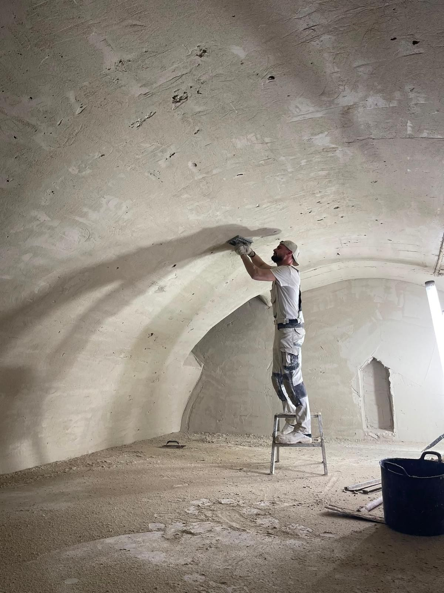

Stucadoor in Drenthe
Strak in afwerking,
sterk in detail.
Van glad stucwerk en gewelven tot betonlook, gietvloeren en spuitwerk. Vakwerk dat je elke dag ziet, en elke dag voelt.
- Vrijblijvende opname aan huisFrank bekijkt de ruimte en denkt mee
- Heldere offerte voorafJe weet waar je aan toe bent
- Persoonlijk contact met FrankVan opname tot oplevering
Een wand of vloer zie je elke dag. Daarom verdient hij echt vakwerk: rustig, strak en gemaakt om lang mooi te blijven.
Diensten
Vijf manieren om een ruimte af te maken

Uitgelicht
Een gewelf, laag voor laag strak gezet
Geen rechte wand, maar een doorlopende boog. Machinaal opgezet en daarna met de hand gladgespaand, tot de ronding vloeiend doorloopt.
Bekijk het projectWerkwijze
Laag voor laag naar een strakke wand
Projecten
Recent werk
Reviews
Wat klanten zeggen
Over Frank
Persoonlijk contact, van opname tot oplevering
Frank Oldenburger komt zelf langs om je ruimte te bekijken en denkt met je mee over de mooiste afwerking.
Maak kennis met Frank